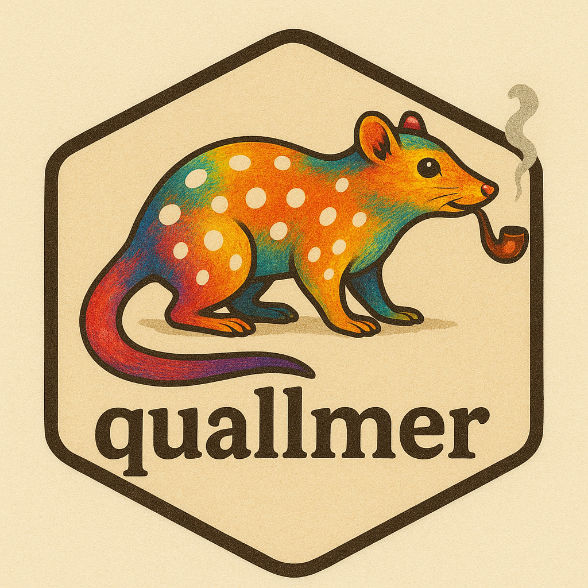

Repository Guidelines
Project Structure & Modules
- R: Package code and Shiny app (e.g.,
annotate(),validate_app()). - tests/testthat: Unit tests (testthat 3e) and test runner
tests/testthat.R. - man: Generated Rd docs (roxygen2); do not edit by hand.
- vignettes: Long-form docs built with knitr/rmarkdown.
- data, data_creation: Example datasets and scripts used to create them.
- pkgdown, _pkgdown.yml, docs: Website configuration and built site.
- DESCRIPTION, NAMESPACE: Package metadata;
NAMESPACEis roxygen2-generated. - .github/workflows: CI for R CMD check, coverage, and pkgdown.
Build, Test, and Develop
- Dev loop:
devtools::document(); devtools::test(); devtools::check(). - Tarball/check:
R CMD build .thenR CMD check quallmer_*.tar.gz --as-cran. - Site:
pkgdown::build_site()updatesdocs/. - App:
quallmer::validate_app()launches the validator UI.
Coding Style & Naming
- Indentation: 2 spaces; avoid tabs and overly long lines.
- Naming: snake_case for functions/objects (e.g.,
trail_settings,task_sentiment). - Roxygen2: Use complete param/return docs and
@exportfor user-facing APIs. - Imports: Prefer namespace-qualified calls (e.g.,
dplyr::mutate).
ellmer-Aligned Conventions
- R sessions: run with
R --quiet --vanillafor reproducibility. - Tests: map
R/{name}.Rtotests/testthat/test-{name}.R; usedevtools::test(reporter = "check"); avoiddevtools::test_active_file(). - Docs: sentence case headings; run
devtools::document()after changes; ensure topics appear in_pkgdown.ymland passpkgdown::check_pkgdown(). - Structure: lead with high-level logic; keep helpers below; avoid nested functions unless trivial.
- Errors: prefer
cli::cli_abort()and tidyverse error style. Example: see input validation inR/annotate.R.
Testing Guidelines
- Framework: testthat (edition 3). Place files as
tests/testthat/test-*.R. - Write small, focused tests; mock external services. No network in unit tests.
- Run locally with
devtools::test(); coverage withcovr::package_coverage(). - CI: GitHub Actions run R CMD check, snapshots, and Codecov upload.
Commit & Pull Requests
- Commits: Concise, imperative subject (e.g., “add trail comparison summary”).
- Reference issues/PRs when applicable (e.g.,
Fixes #21). - PRs: Include a clear summary, motivation, and scope; link issues; add tests for new behavior; update docs/vignettes as needed; include screenshots/GIFs for UI changes to
validate_app(). - NEWS: Add a succinct bullet to
NEWS.mdfor any user-facing change. - Template: Use
.github/pull_request_template.mdto structure submissions.
NEWS Entries (tidyverse style)
- Prefer one bullet per change; keep it user-facing and concise.
- Use code font for functions/args; reference issues/PRs and authors.
- Examples:
-
annotate()now accepts named vectors as IDs in output (#123, @login). - Fixed crash in
validate_app()whengoldcolumn is missing (#145). - Documentation: Added “Agreement metrics” vignette; clarified
task()examples (#150).
-
Security & Configuration
- Secrets: Never commit API keys. Locally, set
OPENAI_API_KEYin your environment. CI uses repository secrets for pkgdown builds. - Reproducibility: Prefer pinned package versions when reporting issues; include
sessionInfo()in bug reports.